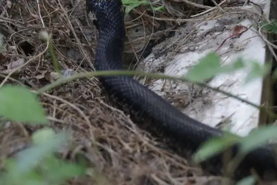

Snakes of Azerbaijan
20 snake species are recorded in Azerbaijan in SnakeList: 7 venomous and 13 non-venomous, from 4 families.
- 20species
- 7venomous
- 13non-venomous
- 4families
These totals count the snakes SnakeList records as living in Azerbaijan. A species counts if it is recorded anywhere in the country, so not every snake lives in every region.
Species
Showing 20 species
 Alburzi ViperVipera eriwanensis
Alburzi ViperVipera eriwanensis Armenian ViperMontivipera raddei
Armenian ViperMontivipera raddei Asia Minor Dwarf RacerEirenis modestus
Asia Minor Dwarf RacerEirenis modestus Black-headed Snake (melanocephalus)Rhynchocalamus melanocephalus
Black-headed Snake (melanocephalus)Rhynchocalamus melanocephalus Cat SnakeTelescopus fallax
Cat SnakeTelescopus fallax Caucasian pitviperGloydius caucasicus
Caucasian pitviperGloydius caucasicus Collared Dwarf SnakeEirenis collaris
Collared Dwarf SnakeEirenis collaris Dinnik's ViperVipera dinniki
Dinnik's ViperVipera dinniki Dione SnakeElaphe dione
Dione SnakeElaphe dione Dotted Dwarf SnakeEirenis punctatolineatus
Dotted Dwarf SnakeEirenis punctatolineatus Lotiev's ViperVipera lotievi
Lotiev's ViperVipera lotievi Nose-horned ViperVipera ammodytes
Nose-horned ViperVipera ammodytes Palestine Kukri SnakeRhynchocalamus satunini
Palestine Kukri SnakeRhynchocalamus satunini
Persian Rat SnakeZamenis persicus Red-Bellied RacerDolichophis schmidti
Red-Bellied RacerDolichophis schmidti Sand Boa (jaculus)Eryx jaculus
Sand Boa (jaculus)Eryx jaculus Spotted Whip SnakeHemorrhois ravergieri
Spotted Whip SnakeHemorrhois ravergieri Steppe Ribbon RacerPsammophis lineolatus
Steppe Ribbon RacerPsammophis lineolatus Transcaucasian Rat SnakeZamenis hohenackeri
Transcaucasian Rat SnakeZamenis hohenackeri Urartian Rat SnakeElaphe urartica
Urartian Rat SnakeElaphe urartica
No snakes in Azerbaijan match.
Azerbaijan’s snakes in numbers
- Families: Colubridae 12, Viperidae 6, Boidae 1, Psammophiidae 1.